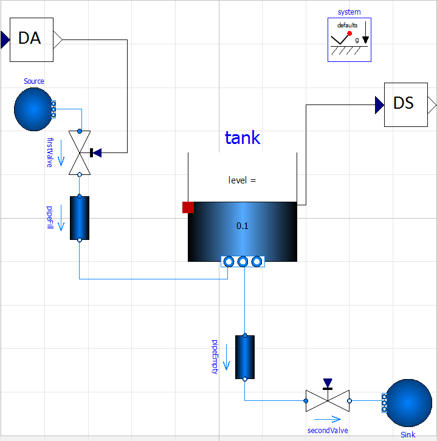
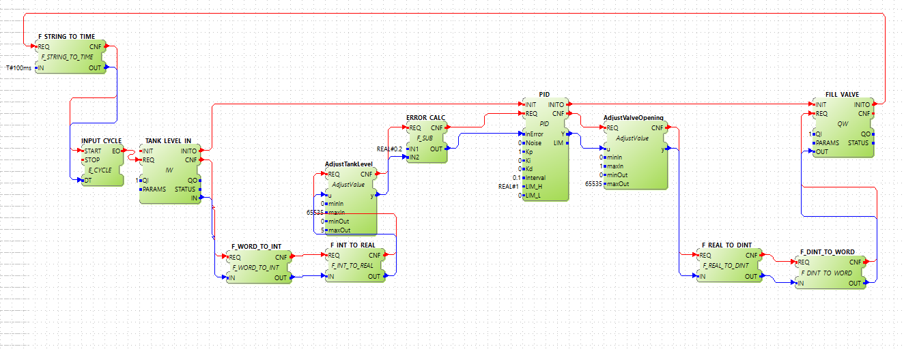
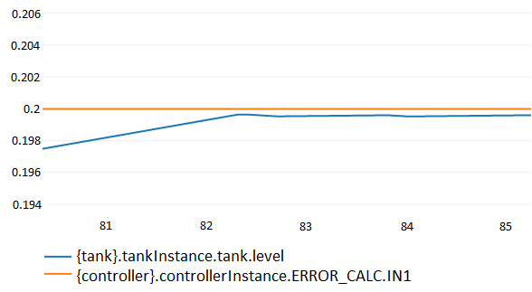
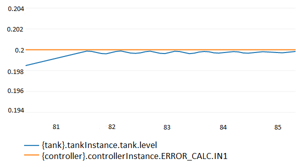
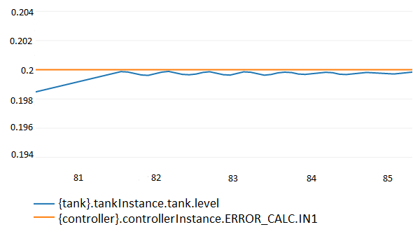
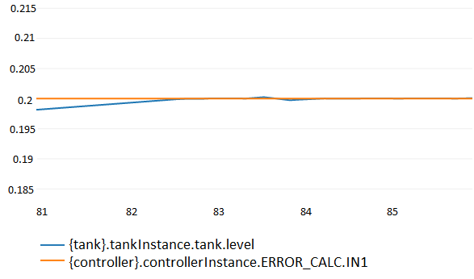

Communicating With Simulation Tools
FMI
About FMI
The Functional Mockup Interface (FMI) is a standard which creates a common interface for simulation of systems from different areas. The idea behind it is to have a common language between different simulation tools in a way that they can communicate with each other. Each system that implements this interface is exported in a so called a Functional Mockup Unit (FMU). The standard is free and more information about it can be found here.
Eclipse 4diac has the capability to export each device of a system as a FMU. The idea behind this is to have in Eclipse 4diac the controller of a physical system, and export it as an FMU. On the other side, the physical system itself can be modeled in a tool that’s specialized in its area, and which also allows an FMU export of the system. With both FMUs in hand, a co-simulation tool can be used to connect the inputs and outputs of both systems together and co-simulate them and see how the system will behave with the implemented controller.
How to export and FMU in 4diac IDE?
-
First, a special 4diac FORTE has to be compiled. Follow the steps to build your own FBs. In the step 3 where the features to be compiled are selected, select also
FORTE_ENABLE_FMU. TheFORTE_FMU_INCLUDEvariable should be set to the path where the headers files from the fmi standard are located. This will generate a dynamic library, whose name will depend on the operative system 4diac FORTE was compiled. This library must be renamed to one of the following supported ones: win32Forte.dll, win64Forte.dll, linux32Forte.so or linux64Forte.so (for windows 32 bits, windows 64 bits, linux 32 bits and linux 64 bits operative systems respectively). An FMU can have many different libraries, wich will allow the FMU to be simulated in these Operative Systems. -
In the 4diac IDE, go to Windows → Preferences → 4diac IDE → FMU Preferences and in the "Binaries Location" field, select the path where the compiled 4diac FORTE (with the right new name) is located. Many libraries from the different OS can be placed in the same folder, which will be detected by the preference, enabling the OS to be possibly included in the FMUs. Apply the changes and close.
-
Go to File → Export… → 4diac → Create FMU → Next. In the tree of projects, select the Devices with the resources to be exported as FMU. Remember, one FMU for each device will be exported. Choose the directory to export the FMU, the libraries to be included (only the libraries found in the step before will be enable to be selected). The last option allows the user to save the selected libraries for the next time. Click Finish and it’s done.
Notes
-
The IX and QX FBS are treated as boolean inputs and outputs respectively of the FMU.
-
The IW and QW FBS are treated as integer inputs and outputs respectively of the FMU.
-
Literals in data inputs are treated as parameters of the FMU.
-
Types BYTE, WORD, DWORD, LWORD, INT, DINT, LINT, SINT, USINT, UINT, UDINT, ULINT, ANY_INT are treated as integer in the FMU.
-
Types STRING, WSTRING, ANY_STRING, DATE, DATE_AND_TIME, TIME_OF_DAY, ANY_DATE, TIME are treated as strings in the FMU.
-
Types REAL, LREAL, ANY_REAL are treated as real in the FMU.
-
Type BOOL is treated as boolean in the FMU.
-
Data inputs and outputs which are defined to abstract types (not any of the above) are no included in the FMU
-
Communication FBs are also treated as inputs and outputs of the FMU if the PARAM data input is set to "fmu[]". Each SD and RD is treated as an output and input respectively.
-
All the data inputs and data outputs, as well as internal variables in basic function blocks (and current state of the ECC), and internal FBs in a composite FB are exported as internal variables of the FMU, meaning that can be monitored when co-simulating. The number of time an events has been triggered is also available. Service Interface Function Blocks have only their interface available, since the implementation is hidden.
-
The FBs: E_CYCLE, E_F_TRIG, E_R_TRIG, E_TimeOut, E_CTU, E_D_FF, E_DEMUX, E_MERGE, E_PERMIT, E_REND, E_RS, E_SELECT, E_SPLIT, E_SR, E_SWITCH are treated as Service Interface Function Blocks.
-
Adapters are not yet supported.
Example
A simple tank system was modeled in OpenModelica as in the picture below. it has a "firstValve" which is to be controlled, which fills the tank. The "secondValve" is always open, so the tank tends to be empty.

DA and DS stand for "dummy actuator" (for controlling the first valve) and "dummy sensor" (which measures the current level of the tank) respectively, which just transform the physical measurement into a 16bits integer, which are the input and output of the tank system.
In 4diac IDE, the following PID controller was implemented. The main PID function block is a basic function block, which keeps the level of the tank to the desired position (ERROR_CALC.IN2). The tank is always loosing water (remember, just an example). TANK_LEVEL_IN (IW) and FILL_VALVE (QW) are the FBs that are the input and output of the exported FMU.

Once both system are exported as FMUs, they can be co-simulated using the INTO-CPS tool. Inputs and outputs of both model are connected properly (sensor of the level of the tank to the input of the controller, and the output of the controller to the actuator of the valve of the tank). Since the Kp, Ki and Kd of the PID controller are literals, they’re treated as parameters, which can be set in every co-simulation, making it easier to tune it.
Below the first tries to tune the PID using the Ziegler-Nichols method

 

And the final result of the tunning is seen below

This shows how two system from different areas can be easily coupled. The 4diac FMU also help finding bugs in your application to see if it behaves are expected.
Matlab
Eclipse 4diac user Marc Jakobi developed a communicating library in Matlab, which allows connecting IEC 61499 control applications with simulation models in Matlab. The library, which is available as open source, implements the Client/Server protocol defined in the IEC 61499 compliance profile for feasibility demonstrations. Therefore, on the 4diac side you just need to insert a server communication function block. For detailed documentation as well as the library code, please have a look at the tcpip4diac project on GitHub.
Where to go from here?
-
Go back to Protocols index:
Communication Index -
If you want to go back to the Start Here page, we leave you here a fast access
Start Here page
Or Go to top